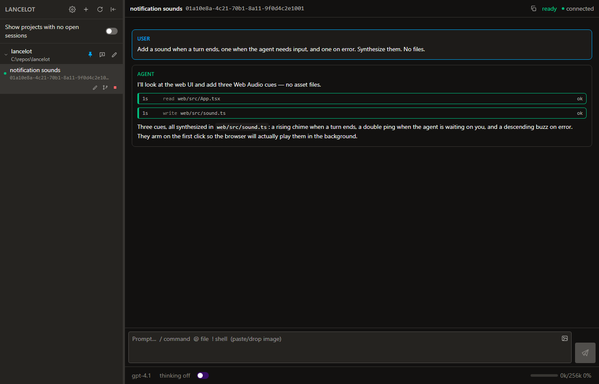

Lancelot
I've been using the pi coding agent for the last six months. Since I'm still on Windows because of a few legacy MSSQL projects, the TUI experience is pretty poor. Most of my work has been done through a web UI. Unfortunately, that web UI was buggy, slow, and error-prone, and pi-subagents didn't have strong integration with the web UI I was using.
I currently run 3-4 agents simultaneously with close to a dozen active sessions at a time. The goal I set myself for the year was to be able to regularly and reliably run half a dozen simultaneous multi-hour sessions without having to check progress. Having so many issues with the main interface to the harness was drastically slowing me down. The DOM would get cluttered, spawning or forking sessions was error-prone, and the dashboard would randomly desync pi, leading to missing turns until a reboot.
I checked out a few other pi plugins for web UIs, but they all shared a similar architectural problem - why does my web UI to the agent harness need to live in the same environment as the harness? This seemed like a major antipattern to me, with the only real benefit being that the UI can be installed via pi install.
Lancelot is a dashboard process talking to a keeper process, one keeper for each pi session you have open. I wanted strong separation from pi - the RPC interface is stable, and spawning via the command line for new sessions is durable. I wanted to be able to restart the dashboard and have it reattach to active pi sessions, and for it not to be a buggy vibe-coded mess slowing me down.

The repo is jdrich/lancelot.
The day pi hit 1.0, I started work on Lancelot, intending to replace my web UI within one marathon session so I could get back to being productive. I spent a reasonable amount of time with DeepSeek and Grok nailing down the process model. Thankfully, pi's RPC client is really well written. Spawning new sessions was a big hurdle with the old dashboard, so fixing that was a top priority.
I started with a pretty bare-bones UI, then set to work on a project structure that made a bit more sense to me - simple, flat JSON and JSONL files for history, config, etc. After the better part of a day, the UI was mostly in place. The RPC client still had some issues with sending things to the browser UI consistently (compactions would disappear, and messages would appear out of sync). After some debugging, replacing some bad agent work, and adding basic features like commands, typeahead, and pretty block formatting, Lancelot was born.
Once the process model was working as intended, development switched from a lone pi TUI session to the Lancelot UI. Most of the UI development was bringing over the parts of the old UI plugin that I actually used - setting model/thinking levels, manual compactions, command blocks, etc. Adding the static session persistence felt pretty elegant. That one marathon session spawned two shorter fiddly sessions over the weekend, as I cleaned up the implementation a bit, added first-class subagents (later moved into a separate project), and some other nice-to-haves (basic sounds have been a massive boon).
There were some hurdles in development, though. Early in the implementation, DeepSeek decided to keep two separate copies of the RPC feed on the server, and interleave them client-side. It took DeepSeek a while to admit it was the wrong decision, after I swore at it a few times. Scrolling nested blocks for thinking/bash and the main feed at the same time was difficult until I told DeepSeek to just use Playwright to test. There were a handful of times I had to pull up pi's RPC docs and fight with the model on what information was actually available on API calls. It had initially implemented the RPC client as two massive if/else blocks. There were some process lifecycle ownership bugs where the agent would get into a mostly stable spot and then start band-aiding the implementation until I stepped in and told it to change its approach.
Simply by moving the old extension out of pi's config, I was able to bring new session spawning down by about 20 seconds. I didn't care enough to debug the slowdown, but removing it and not having old sessions take ~60 seconds to load into the DOM (and slow everything down tremendously) was a big benefit. I noticed right away how much faster the UI felt. I'm not sure what that old plugin was doing, but it was slow. Shockingly, the minor UI enhancements and simple speedups have really reduced the friction of context switching and iterating, and I get a warm feeling now every time Lancelot pleasantly dings on a completed turn.
Overall, I'm very happy with the switchover. I should have written this a month earlier.
I excluded a few things from the build-out intentionally, most importantly auth. I built this for myself, and it's only served up to my laptop and my phone when on my home network. If I need more functionality, I can give a dispatcher/coordinator access to some sort of messaging platform (probably Slack) later, but for now I'm able to work from anywhere in the house.
I'm going to keep Lancelot a clean, "do one thing" tool, and introduce two other tools to close the loop on my workflow: Bedivere (orchestration, queuing/scheduling, agent profiles) and Morgain (agent knowledge/context repository). Lancelot and pi already have the hooks necessary to make this run cleanly, and the more I own the tools, the more I can customize and enhance my workflow.